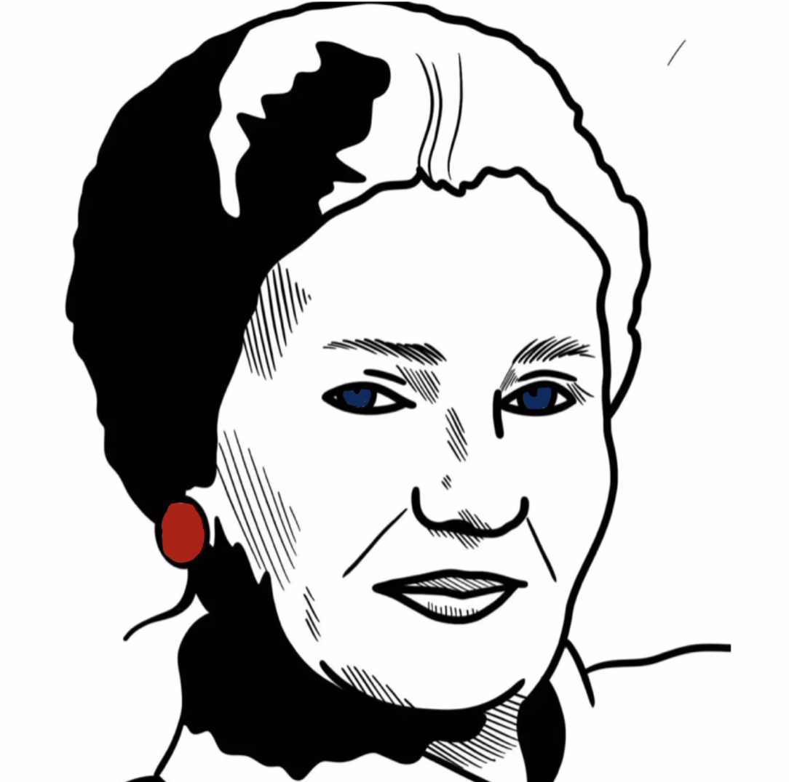
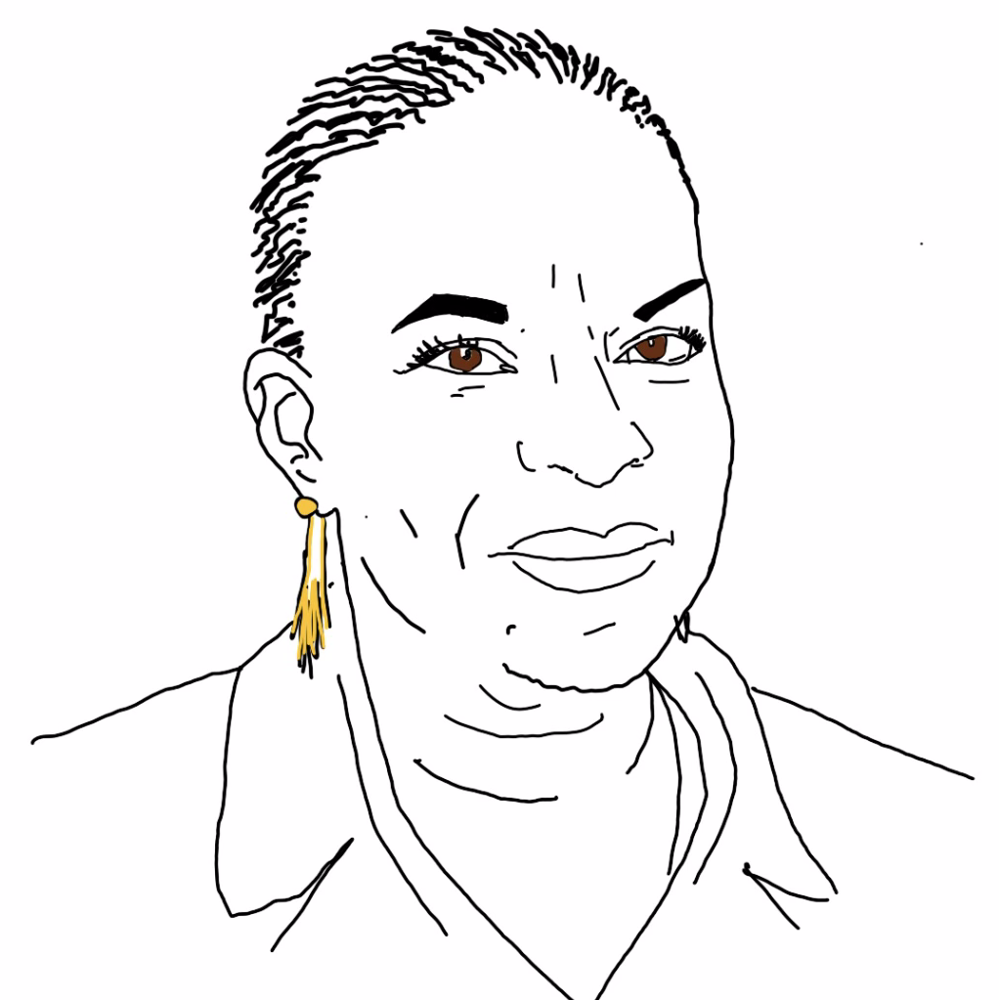
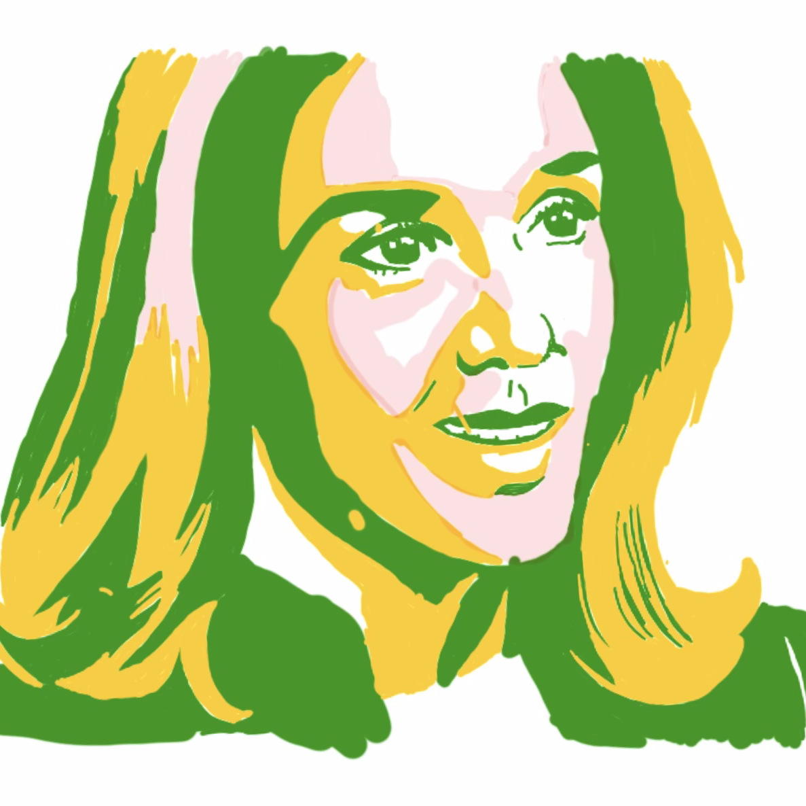
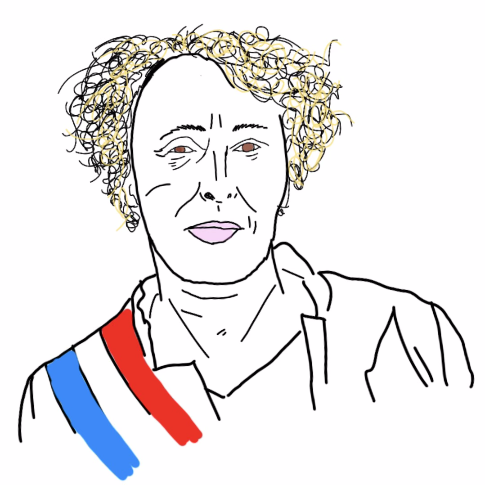
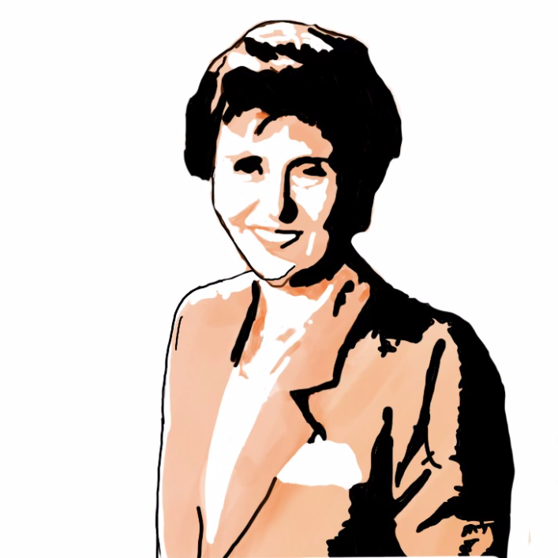

Bien que ces derniers temps, la place de la femme en politique évolue, elle reste inégale face à celle des hommes.
En effet, il y avait 10,9% de femmes à l'Assemblée Nationale en 1999, contre 26,9% en 2012. Cela reste inégalement
réparti face au nombre d'hommes élevé.

SIMONE VEIL

CHRISTIANE TAUBIRA
Étant donné qu'il y a peu de contraintes législatives, peu de personnes à l'Assemblée Nationale se sont engagées à
respecter la réforme constitutionelle de 1999 ou encore des lois viosant à la parité dans la politique. Toutefois,
en 2013 est apparue une loi visant à renforcer cette parité pour les élections, que ce soit municipales,
intercommunales ou encore départementales : le binôme paritaire est avancé pour les élections départementales.

GISÈLE HALIMI
ARLETTE LAGUILLER

FRANÇOISE GIROUD

EDITH CRESSON
GERMAINE POINSO-CHAPUIS
SÉGOLÈNE ROYAL
SIMONE VEIL
En 1975, Simone Veil, ministre de la santé, permit l'autorisation du recours à l'IVG (Interruption Volontaire
de Grossesse)
Tu peux en apprendre plus sur elle par ici:
CHRISTIANE TAUBIRA
Christiane Taubira a été ministre de la justice et a contribué à de nombreuses choses, telles que
l'autorisation du mariage des couples de même sexe.
Tu peux en apprendre plus sur elle par ici:
GISÈLE HALIMI
Gisèle Halimi est une militante. Bien qu'elle n'a pas été élue (sauf entre 1981 et 1984 en tant que députée),
elle est qualifiée de femme politique pour son rôle dans l'avancée de certaines lois en faveur de la femme,
comme l'autorisation de l'IVG, ou encore la qualification du viol comme étant un
crime.
L'épisode de Brut sur son parcours :
ARLETTE LAGUILLER
Arlette Laguiller est la première femme à se présenter aux élections présidentielles suite au décès de Georges
Pompidou. Elle n'a pas remporté cette élection (elle a reçu 2,3% des suffrages à cette
élection.). Toutefois, bien que jamais élue, elle a continué de se présenter aux élections présidentielles
jusqu'en 2007.
Découvre sa dernière campagne présidentielle :
FRANÇOISE GIROUD
Françoise Giroud est connue pour avoir été secrétaire d'État à la condition féminine, mais
aussi, et surtout pour les 101 mesures faites grâce à elle pour les femmes.
Voici une de ses nombreuses mesures :
EDITH CRESSON
Edit Cresson est une socialiste qui a été première ministre, ce qui était, et est
malheureusement toujours,
exceptionnel. Cela n'a pas plus à de nombreuses personnes et elle a abandonné sa fonction quelques temps après.
Toutefois, ça ne l'empêchera pas d'avoir marqué l'histoire de la France et d'avoir fait avancer les droits des
femmes en politique.
Découvre son parcours politique :
GERMAINE POINSO-CHAPUIS
Bien que cette femme est souvent oubliée dans les livres d'histoire, elle fût pourtant la première femme
ministre en France. En effet, elle était ministre de la santé, ce qui a, comme avec Edith Cresson,
marqué une avancée dans les droits des femmes en politique.
SÉGOLÈNE ROYAL
Ségolène Royal a elle aussi marqué l'avancée des droits des femmes en politique en se présentant aux
présidentielles de 2007. Toutefois, elle a surtout été présente en tant que candidate au
deuxième scrutin, ce qui fût une première.
La vidéo du média Lumni sur sa participation à l'élection présidentielle :